Die meisten Kantone führen Ende der 60er oder anfangs der 70er das kantonale und das kommunale Frauenstimmrecht ein. Bei einigen Kantonen verzögert sich die Einführung jedoch bis in die 80er-Jahre und 90er Jahre.
Am 31. Oktober 1971 finden die ersten Eidgenössischen Wahlen mit Frauenbeteiligung statt.
Am 29. November 1971 ziehen 11 Frauen in den Nationalrat und eine Frau in den Ständerat ein.
Am 14. Juni 1981 wird die Gleichstellung von Frau und Mann in der Bundesverfassung angenommen: «Mann und Frau sind gleichberechtigt. Das Gesetz sorgt für ihre Gleichstellung, vor allem in Familie, Ausbildung und Arbeit. Mann und Frau haben Anspruch auf gleichen Lohn für gleichwertige Arbeit».
Am 1. Januar 1988 tritt das neue Eherecht in Kraft. Seither gelten Frauen und Männer in der Ehe als gleichberechtigt. Vorher musste die Frau bei grösseren Ausgaben die Zustimmung des Ehemannes einholen und auch Arbeitsverträge durfte sie nur mit ausdrücklicher oder stillschweigender Bewilligung des Ehemannes eingehen.
Am 27. November 1990 wird durch einen Bundesgerichtsentscheid im letzten Kanton Appenzell-Ausserrhoden das Frauenstimmrecht eingeführt.
Am 14. Juni 1991 gehen hunderttausende Frauen am landesweiten Frauenstreik auf die Strasse. Es ist die grösste öffentliche Kundgebung seit dem Landesstreik von 1918.
Am 1. Juli 1996 tritt das Gleichstellungsgesetz (GlG) in Kraft. Es bezweckt die Förderung der tatsächlichen Gleichstellung von Frau und Mann. Es gilt für alle Bereiche des Erwerbslebens. Verboten sind sowohl direkte wie indirekte Diskriminierungen.
Am 2. Juli 2002 sagt das Volk «Ja» zur sogenannten Fristenregelung. Sie legalisiert den Schwangerschaftsabbruch in den ersten 12 Wochen und gibt der schwangeren Frau das Recht, selbstständig zu entscheiden.
Am 1. April 2004 wird Gewalt in der Ehe und Partnerschaft zum Offizialdelikt. Körperliche Gewalt, sexuelle Nötigung und Vergewaltigung in einer Ehe oder Lebensgemeinschaft müssen nun von Amtes wegen verfolgt werden. Es braucht keine Anzeige durch das Opfer.
Am 26. September 2004 wird die Mutterschaftsversicherung angenommen. Mütter erhalten einen Erwerbsersatz für die ersten 14 Wochen nach der Geburt des Kindes.
Am 9. Februar 2020 wird die Erweiterung der Anti-Rassismus-Strafnorm mit dem Begriff der “Sexuellen Orientierung” klar angenommen. Geschlechtsidentität wurde aber abgelehnt.
Am 14. Juni 2019 Ruth nimmt als 79-jährige am Frauenstreik teil. Sie war eine von über 40'000 Frauen, die in Basel auf die Strasse gingen. Schweizweit waren es über eine halbe Million Frauen. Es war die grösste Kundgebung, die die Schweiz seit dem ersten landesweiten Frauenstreik 1991 erlebt hat.
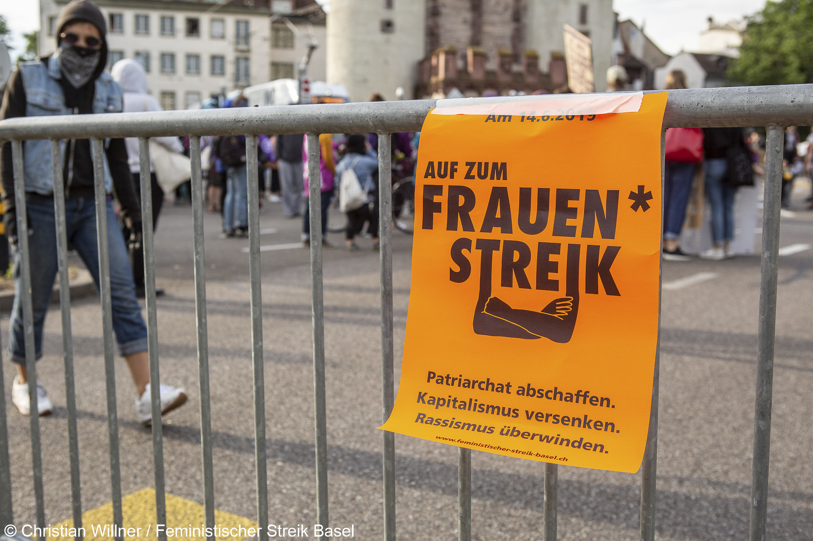
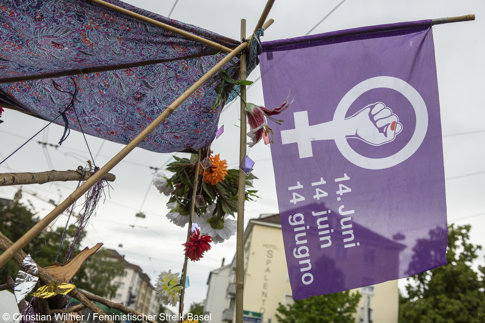
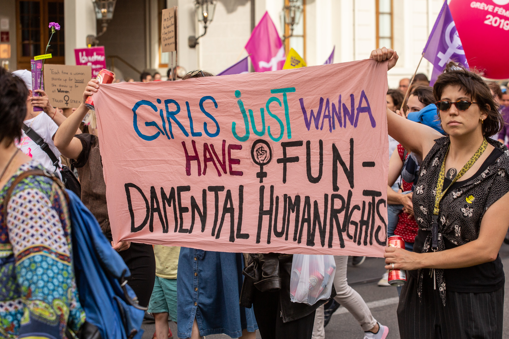
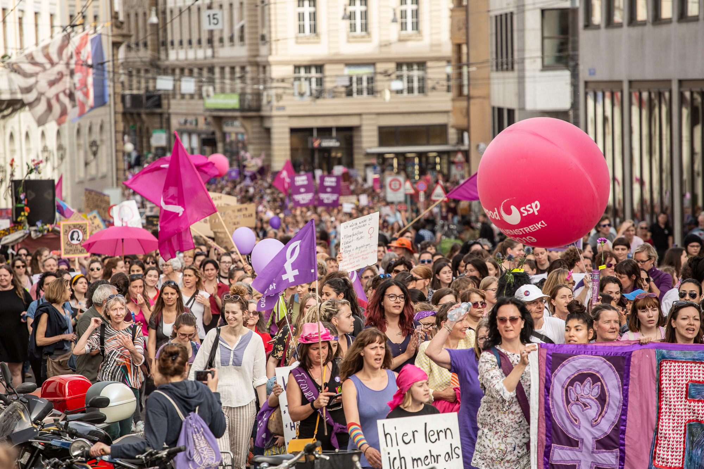
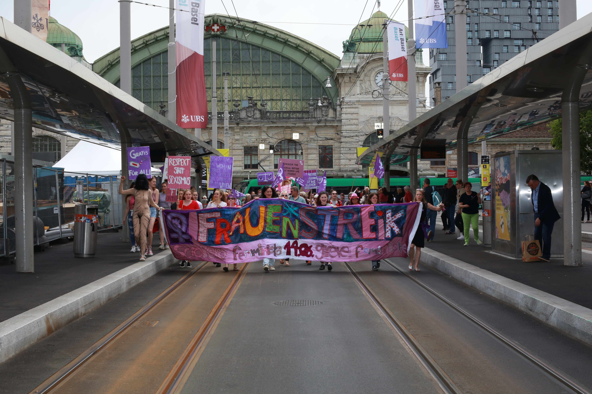
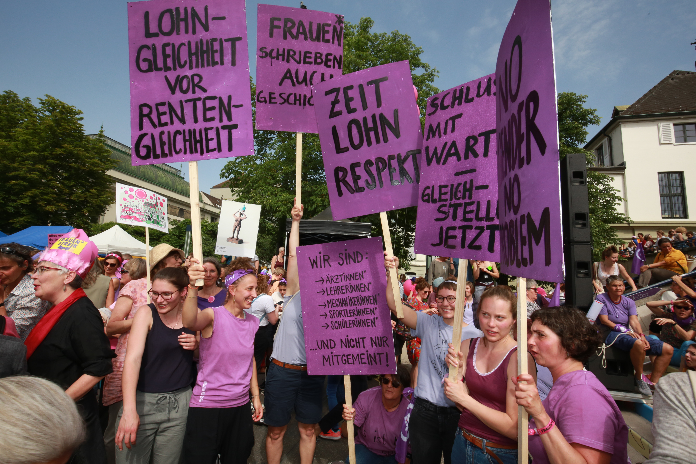
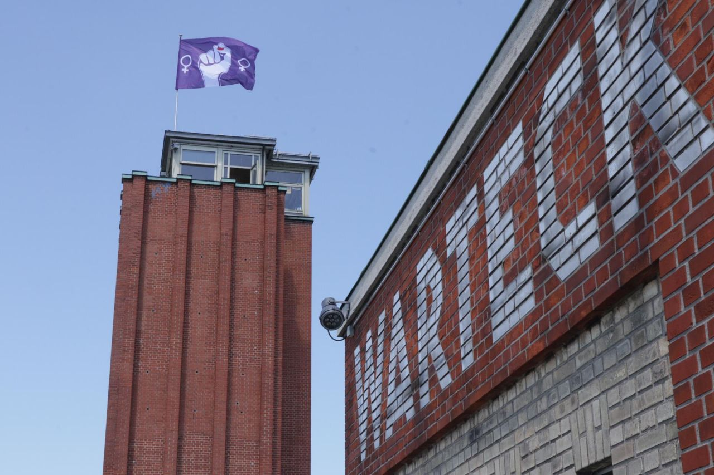
Am 7. Februar 2021 feiern wir 50 Jahre Frauenstimmrecht.
Wo ist noch zu tun?
Trotz der vielen Verbesserungen in den letzten Jahrzehnten, ist die Gleichberechtigung und die tatsächliche Gleichstellung noch immer nicht erreicht.
Frauen verdienen im Schnitt weniger als Männer.
Frauen arbeiten häufiger Teilzeit als Männer.
Frauen übernehmen den Grossteil der unbezahlten Arbeit in Haushalt und Familie.
Frauen sind häufiger von Armut betroffen.
Frauen erhalten weniger Rente als Männer.
Frauen sind häufiger von sexualisierter Gewalt betroffen.
Frauen sind in der Politik und in Führungspositionen noch immer unterrepräsentiert.
Die Schweiz ist in der Rangliste der Geschlechtergleichheit zimlich weit hinten. (2018, Platz 20)
Mutterschaft ist ein Berufsrisiko. Jede siebte Frau verliert laut einer Studie deswegen ihre Stelle. Siehe Artikel in Luzerner Zeitung
Geschlechtsidentität wird in der Schweiz zwischen Frauen und Männer definiert und wird nicht als Diskriminierungkategorie anerkannt.
 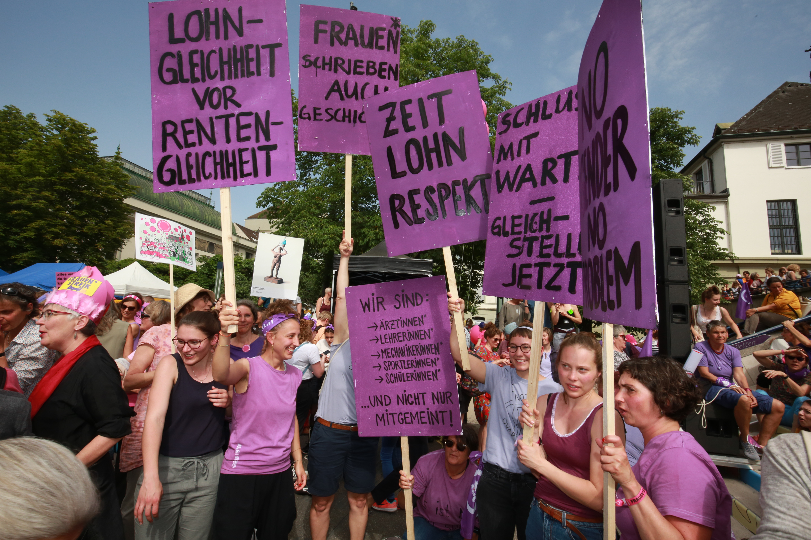
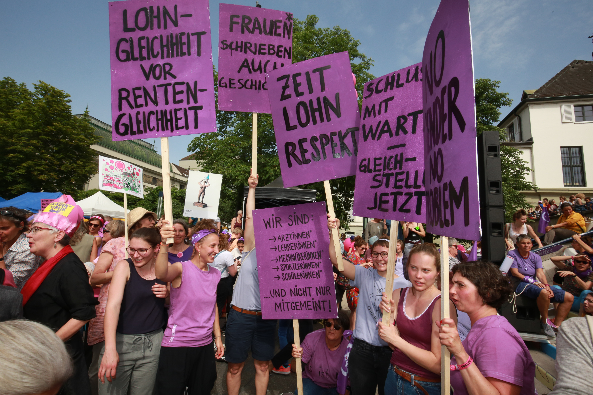
 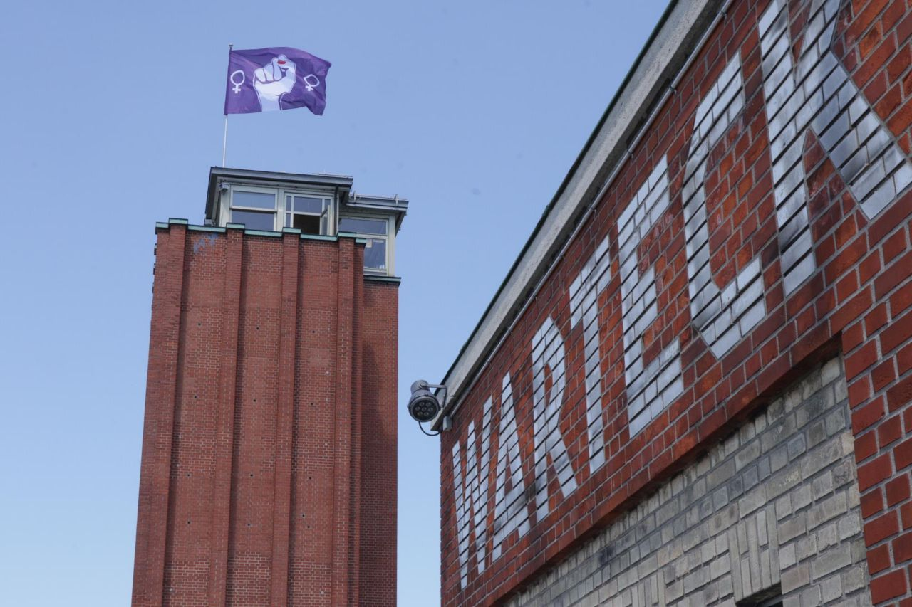
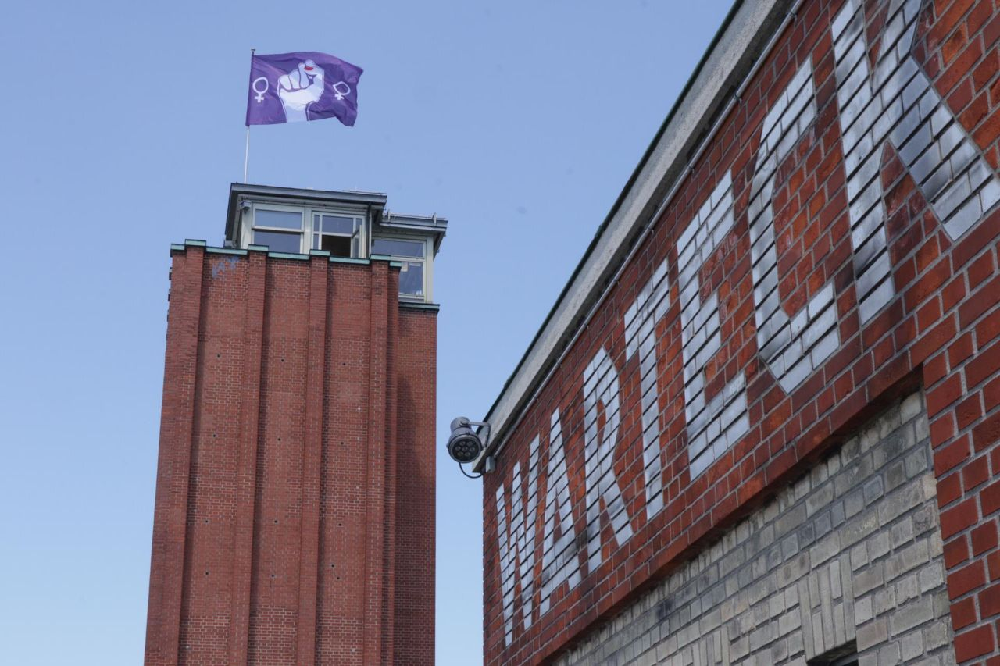